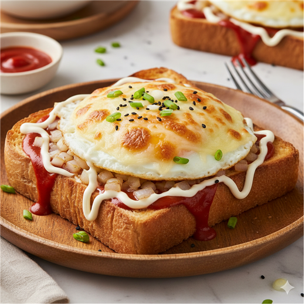
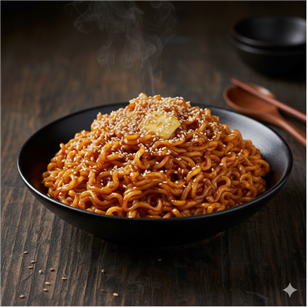
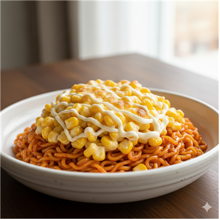
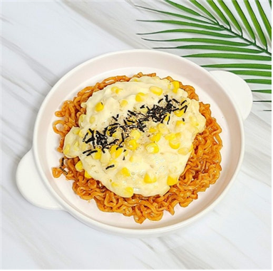
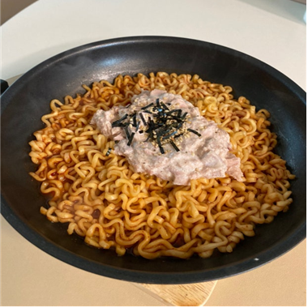

← 메인으로 돌아가기
🍯 단짠단짠 레시피

불닭마요토스트
마요네즈와 모짜렐라 치즈의 단짠 부드러움 속에, 화끈한 불닭 소스가 숨어있는 단짠 매콤 토스트!

허니 버터 단짠 불닭
꿀과 버터의 깊은 풍미로 달콤함은 살리고, 간장으로 짭짤한 감칠맛까지 더한 새로운 단짠 매콤 불닭볶음면!

불닭볶음면 개발자 레시피
화끈한 오리지널 불닭볶음면에 옥수수, 설탕, 마요네즈가 만든 달콤한 콘치즈 토핑을 더해 매콤함과 단짠함이 완벽하게 어우러지는 환상의 조합!

콘치즈 불닭볶음면
톡톡 터지는 캔 옥수수의 달콤함과 주욱 늘어나는 모차렐라 치즈의 고소함이 불닭의 매운맛을 부드럽게 감싸 안는, 모두가 좋아하는 단짠매콤 콘치즈 불닭!

참치마요 비빔 불닭
짭짤하고 고소한 참치마요가 불닭의 매콤함을 부드럽게 눌러주어, 맛과 든든함을 모두 잡은 간편하지만 완벽한 한 끼 비빔 불닭! 짭짤하고 고소한 참치마요가 불닭의 매콤함을 부드럽게 눌러주어, 맛과 든든함을 모두 잡은 간편하지만 완벽한 한 끼 비빔 불닭!